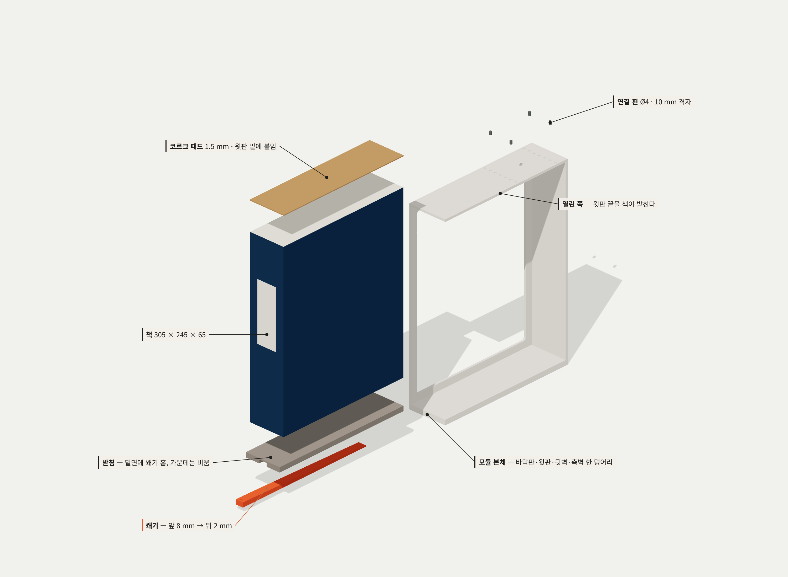
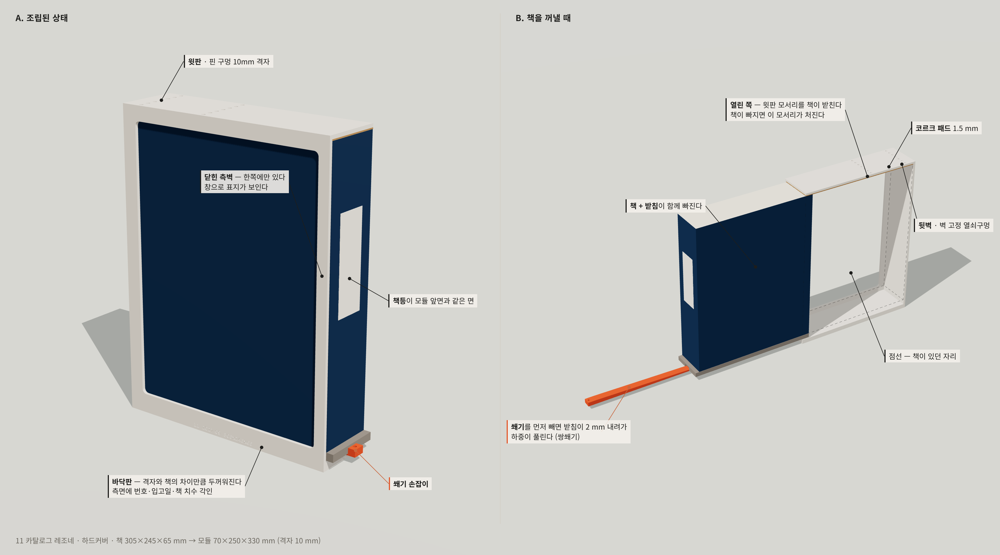
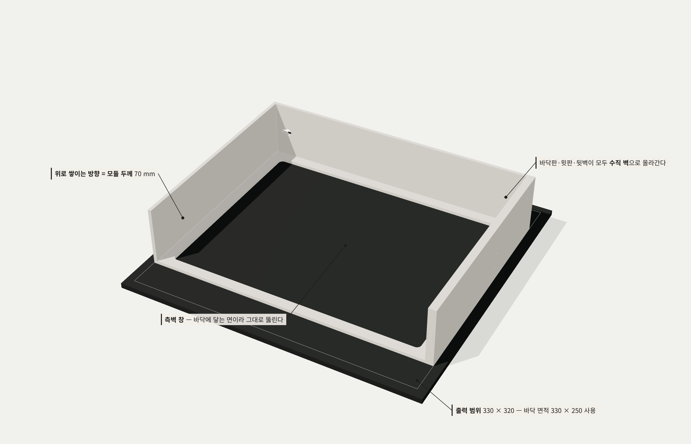
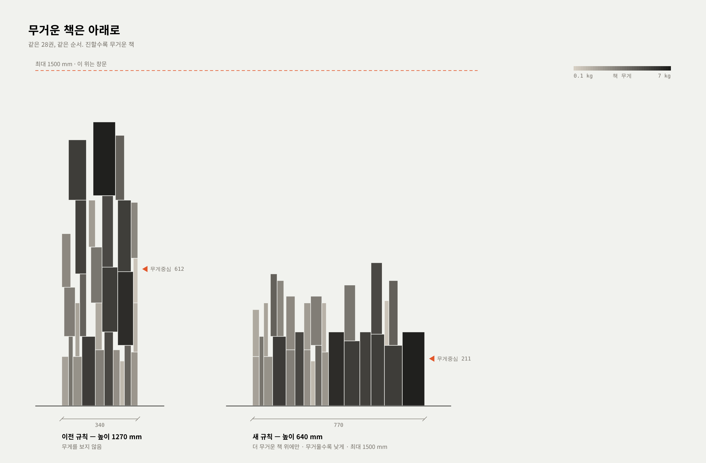

<title>한 권 한 칸 모듈</title>
<meta name="claude:viewport-fit-sides" content="cover">
<link rel="preconnect" href="https://fonts.googleapis.com">
<link rel="preconnect" href="https://fonts.gstatic.com" crossorigin>
<link rel="stylesheet" href="https://fonts.googleapis.com/css2?family=IBM+Plex+Mono:wght@400;500&family=IBM+Plex+Sans+KR:wght@400;500;600;700&display=swap">
<style>
/* 레이아웃: 도면 노트. 본문은 왼쪽 정렬 한 단, 도판은 본문보다 넓게, 도면 안쪽은 늘 밝은 종이 */
:root {
  --bg: #F6F7F4;
  --fg: #1B2120;
  --muted: #5A6460;
  --rule: #D3D8D2;
  --sheet: #F1F2EE;
  --sheet-line: #CDD2CC;
  --accent: #D9531F;
  --accent-fg: #B4451A;
  --chip: #E7EAE5;

  /* 도면 안쪽 색: 종이가 늘 밝으므로 두 테마 공통 */
  --d-paper: #F1F2EE;
  --d-ink: #1B2120;
  --d-dim: #59625E;
  --d-grid: #DCE0DA;
  --d-book: #24405F;
  --d-pages: #E9E5DA;
  --d-cork: #B48A5A;
  --d-shoe: #8E8780;
  --d-wedge: #E2572B;
  --d-ghost: #9AA29E;

  --f-sans: "IBM Plex Sans KR", "Noto Sans KR", "Apple SD Gothic Neo", "Malgun Gothic", system-ui, sans-serif;
  --f-mono: "IBM Plex Mono", ui-monospace, "SFMono-Regular", Menlo, Consolas, monospace;

  --text: 41rem;
  --wide: 68rem;
}
@media (prefers-color-scheme: dark) {
  :root:not([data-theme="light"]) {
    --bg: #131715; --fg: #E5E9E5; --muted: #9AA49F; --rule: #2B3330;
    --sheet-line: #3A433F; --accent: #F0743F; --accent-fg: #F28A5E; --chip: #222926;
    color-scheme: dark;
  }
}
:root[data-theme="dark"] {
  --bg: #131715; --fg: #E5E9E5; --muted: #9AA49F; --rule: #2B3330;
  --sheet-line: #3A433F; --accent: #F0743F; --accent-fg: #F28A5E; --chip: #222926;
  color-scheme: dark;
}

* { box-sizing: border-box; }
body {
  background: var(--bg); color: var(--fg);
  font-family: var(--f-sans); font-size: 1rem; line-height: 1.75;
  word-break: keep-all; overflow-wrap: break-word;
}
.page {
  padding-left: max(16px, env(safe-area-inset-left, 0px));
  padding-right: max(16px, env(safe-area-inset-right, 0px));
  padding-block: 3.5rem 5rem;
  display: grid; gap: 4.5rem;
}
.col { width: 100%; max-width: var(--text); margin-inline: auto; display: grid; gap: 1.1rem; min-width: 0; }
.wide { width: 100%; max-width: var(--wide); margin-inline: auto; min-width: 0; }

.eyebrow { font-family: var(--f-mono); font-size: .78rem; letter-spacing: .08em; color: var(--muted); text-transform: uppercase; }
h1 { font-size: clamp(2.2rem, 6vw, 3.6rem); line-height: 1.12; font-weight: 700; letter-spacing: -.02em; margin: 0; text-wrap: balance; }
h2 { font-size: clamp(1.45rem, 3vw, 1.9rem); line-height: 1.3; font-weight: 700; letter-spacing: -.01em; margin: 0; text-wrap: balance; }
h3 { font-size: 1.05rem; line-height: 1.4; font-weight: 600; margin: 0; }
p { margin: 0; }
.lede { font-size: 1.18rem; line-height: 1.7; color: var(--fg); }
.muted { color: var(--muted); }
b, strong { font-weight: 600; }
.num { font-family: var(--f-mono); font-variant-numeric: tabular-nums; font-size: .92em; }
.key { color: var(--accent-fg); font-weight: 600; }

header.top { display: grid; gap: 1.25rem; }
.spec {
  display: grid; grid-template-columns: repeat(auto-fit, minmax(9.5rem, 1fr));
  border-top: 1px solid var(--rule); border-bottom: 1px solid var(--rule);
  margin-top: .5rem;
}
.spec div { padding: .8rem .2rem .8rem 0; display: grid; gap: .15rem; min-width: 0; }
.spec dt { font-family: var(--f-mono); font-size: .72rem; letter-spacing: .06em; color: var(--muted); text-transform: uppercase; }
.spec dd { margin: 0; font-size: .98rem; font-weight: 500; font-variant-numeric: tabular-nums; }

nav.toc { display: flex; flex-wrap: wrap; gap: .4rem .5rem; font-size: .9rem; }
nav.toc a { color: var(--fg); text-decoration: none; padding: .2rem .6rem; background: var(--chip); border-radius: 3px; }
nav.toc a:hover, nav.toc a:focus-visible { background: var(--fg); color: var(--bg); outline: none; }

/* 도판 */
figure { margin: 0; display: grid; gap: .7rem; min-width: 0; }
.plate { background: var(--sheet); border: 1px solid var(--sheet-line); border-radius: 2px; overflow: hidden; }
.plate img { display: block; width: 100%; height: auto; }
.scroll { overflow-x: auto; -webkit-overflow-scrolling: touch; }
.scroll svg { display: block; width: 100%; height: auto; min-width: 600px; }
.narrow svg { max-width: 620px; margin-inline: auto; }
figcaption { font-size: .88rem; line-height: 1.6; color: var(--muted); max-width: var(--text); }
figcaption .fig { font-family: var(--f-mono); color: var(--fg); margin-right: .5rem; }
.pair { display: grid; gap: 1rem; grid-template-columns: minmax(0, 1fr); }
@media (min-width: 900px) { .pair { grid-template-columns: minmax(0, 0.62fr) minmax(0, 1.38fr); align-items: start; } .pair .scroll svg { min-width: 0; } }

/* 세 원칙 */
.principles { display: grid; gap: 1.5rem; grid-template-columns: repeat(auto-fit, minmax(14rem, 1fr)); }
.principles div { display: grid; gap: .4rem; align-content: start; border-top: 2px solid var(--fg); padding-top: .8rem; min-width: 0; }
.principles .tag { font-family: var(--f-mono); font-size: .75rem; color: var(--muted); letter-spacing: .05em; }

/* 표 */
.tablewrap { overflow-x: auto; }
table { border-collapse: collapse; width: 100%; font-size: .92rem; line-height: 1.5; }
th, td { text-align: left; vertical-align: top; padding: .6rem .8rem .6rem 0; border-bottom: 1px solid var(--rule); }
thead th { font-family: var(--f-mono); font-size: .72rem; letter-spacing: .06em; text-transform: uppercase; color: var(--muted); font-weight: 500; border-bottom: 1px solid var(--fg); }
td.n { font-family: var(--f-mono); font-variant-numeric: tabular-nums; white-space: nowrap; }
td .muted { font-size: .85rem; }

/* 순서 */
ol.steps { list-style: none; margin: 0; padding: 0; display: grid; gap: .9rem; counter-reset: s; }
ol.steps li { display: grid; grid-template-columns: 2.1rem minmax(0, 1fr); gap: .6rem; counter-increment: s; }
ol.steps li::before { content: counter(s); font-family: var(--f-mono); font-weight: 500; width: 1.7rem; height: 1.7rem; border-radius: 50%; display: grid; place-items: center; border: 1px solid var(--fg); font-size: .85rem; margin-top: .2rem; }
ol.steps li.accent::before { border-color: var(--accent); color: var(--accent-fg); }

dl.details { display: grid; gap: 0; margin: 0; }
dl.details > div { display: grid; grid-template-columns: minmax(0, 11rem) minmax(0, 1fr); gap: 1rem; padding: .85rem 0; border-bottom: 1px solid var(--rule); }
dl.details dt { font-weight: 600; }
dl.details dt .num { display: block; font-weight: 400; color: var(--muted); font-size: .8rem; }
dl.details dd { margin: 0; }
@media (max-width: 560px) { dl.details > div { grid-template-columns: minmax(0, 1fr); gap: .25rem; } }

.callout { border-left: 3px solid var(--accent); padding: .3rem 0 .3rem 1rem; }
.foot { font-size: .88rem; color: var(--muted); border-top: 1px solid var(--rule); padding-top: 1.2rem; }
code { font-family: var(--f-mono); font-size: .88em; background: var(--chip); padding: .05rem .3rem; border-radius: 3px; }

/* 도면 요소 (SVG) */
.d-body { fill: url(#h-cut); stroke: var(--d-ink); stroke-width: 1.3; stroke-linejoin: round; }
.d-shoe { fill: url(#h-shoe); stroke: var(--d-ink); stroke-width: 1; }
.d-wedge { fill: var(--d-wedge); stroke: var(--d-ink); stroke-width: 1; }
.d-board { fill: var(--d-book); stroke: none; }
.d-pages { fill: var(--d-pages); stroke: var(--d-book); stroke-width: .7; }
.d-bookplan { fill: var(--d-book); fill-opacity: .18; stroke: var(--d-book); stroke-width: .8; }
.d-cork { fill: var(--d-cork); stroke: none; }
.d-dummy { fill: url(#h-dummy); stroke: var(--d-ink); stroke-width: 1; }
.d-grid { stroke: var(--d-grid); stroke-width: .7; fill: none; }
.d-ghost { fill: none; stroke: var(--d-ghost); stroke-width: 1; stroke-dasharray: 5 4; }
.d-outline { fill: none; stroke: var(--d-ink); stroke-width: 1.1; }
.d-cav { fill: none; stroke: var(--d-dim); stroke-width: .8; stroke-dasharray: 3 3; }
.d-hole { fill: var(--d-paper); stroke: var(--d-ink); stroke-width: .9; }
.d-wall { fill: url(#h-wall); stroke: none; }
.d-dim { stroke: var(--d-dim); stroke-width: .8; fill: none; }
.d-dimt { fill: var(--d-dim); font: 500 11px var(--f-mono); }
.d-label { fill: var(--d-ink); font: 600 12.5px var(--f-sans); }
.d-note { fill: var(--d-ink); font: 400 12px var(--f-sans); }
.d-small { fill: var(--d-dim); font: 400 11px var(--f-sans); }
.d-tag { fill: var(--d-paper); stroke: var(--d-ink); stroke-width: 1; }
.d-tagt { fill: var(--d-ink); font: 600 12px var(--f-mono); }
.d-load { stroke: var(--d-wedge); stroke-width: 2.2; fill: none; marker-end: url(#m-load); }
.d-load-soft { stroke: var(--d-wedge); stroke-width: 1.6; fill: none; stroke-dasharray: 5 3; marker-end: url(#m-load); }
.d-detail { fill: none; stroke: var(--d-ink); stroke-width: .9; stroke-dasharray: 4 3; }
.d-break { fill: none; stroke: var(--d-ink); stroke-width: 1; }

a { color: var(--accent-fg); }
a:focus-visible, nav.toc a:focus-visible { outline: 2px solid var(--accent); outline-offset: 2px; }
@media (prefers-reduced-motion: reduce) { * { scroll-behavior: auto !important; } }
html { scroll-behavior: smooth; }
</style>

<!-- 도면 공통: 해칭과 화살표 -->
<svg width="0" height="0" style="position:absolute" aria-hidden="true" focusable="false">
  <defs>
    <pattern id="h-cut" width="5" height="5" patternUnits="userSpaceOnUse" patternTransform="rotate(45)">
      <rect width="5" height="5" style="fill:var(--d-paper)"/>
      <line x1="0" y1="0" x2="0" y2="5" style="stroke:var(--d-ink);stroke-width:.9"/>
    </pattern>
    <pattern id="h-shoe" width="4" height="4" patternUnits="userSpaceOnUse" patternTransform="rotate(-45)">
      <rect width="4" height="4" style="fill:#DEDAD5"/>
      <line x1="0" y1="0" x2="0" y2="4" style="stroke:var(--d-shoe);stroke-width:.8"/>
    </pattern>
    <pattern id="h-dummy" width="6" height="6" patternUnits="userSpaceOnUse">
      <rect width="6" height="6" style="fill:#E3E6E1"/>
      <path d="M0 6 L6 0" style="stroke:var(--d-dim);stroke-width:.6"/>
      <path d="M0 0 L6 6" style="stroke:var(--d-dim);stroke-width:.6"/>
    </pattern>
    <pattern id="h-wall" width="6" height="6" patternUnits="userSpaceOnUse" patternTransform="rotate(45)">
      <rect width="6" height="6" style="fill:#E2E5E0"/>
      <line x1="0" y1="0" x2="0" y2="6" style="stroke:var(--d-dim);stroke-width:.7"/>
    </pattern>
    <marker id="m-load" viewBox="0 0 10 10" refX="8.5" refY="5" markerWidth="6.5" markerHeight="6.5" orient="auto-start-reverse">
      <path d="M0,0 L10,5 L0,10 z" style="fill:var(--d-wedge)"/>
    </marker>
  </defs>
</svg>

<main class="page">

  <header class="top col">
    <div class="eyebrow">설계 노트 · 3D 프린트 책장 모듈</div>
    <h1>한 권 한 칸 모듈</h1>
    <p class="lede">칸은 책의 치수를 그대로 따르고, 책은 그 칸을 완성하는 네 번째 벽이 된다. 이 노트는 모듈 하나가 왜 이런 형태가 되었는지, 하중이 어디로 흐르는지, 책을 어떻게 꺼내는지를 실제 치수로 설명한다.</p>
    <dl class="spec">
      <div><dt>예시 칸</dt><dd>11 카탈로그 레조네</dd></div>
      <div><dt>책</dt><dd class="num">305 × 245 × 65</dd></div>
      <div><dt>모듈 바깥</dt><dd class="num">70 × 250 × 330</dd></div>
      <div><dt>책 무게</dt><dd class="num">약 4.9 kg</dd></div>
      <div><dt>재료</dt><dd>PETG, 지지대 없음</dd></div>
      <div><dt>출력</dt><dd>3번 (본체·받침·쐐기)</dd></div>
    </dl>
    <nav class="toc" aria-label="목차">
      <a href="#principles">세 원칙</a>
      <a href="#dimensions">치수</a>
      <a href="#section">단면 형태</a>
      <a href="#removal">꺼내기</a>
      <a href="#details">디테일</a>
      <a href="#printing">출력</a>
      <a href="#stacking">쌓기</a>
      <a href="#open">남은 질문</a>
    </nav>
  </header>

  <figure class="wide">
    <div class="plate"></div>
    <figcaption><span class="fig">그림 1</span>분해 축측도. 오른쪽이 모듈 본체를 열린 쪽에서 본 모습이고, 왼쪽에 칸 안에 들어가는 것들을 쌓이는 순서대로 띄웠다. 아래부터 쐐기, 받침, 책, 코르크 패드.</figcaption>
  </figure>

  <section class="col" id="principles">
    <h2>세 원칙</h2>
    <div class="principles">
      <div>
        <span class="tag">치수</span>
        <h3>바깥은 격자, 안은 책</h3>
        <p>안쪽 공간은 책에 딱 맞추고, 바깥 치수만 10 mm 단위로 올린다. 그 차이는 벽 두께가 흡수한다.</p>
      </div>
      <div>
        <span class="tag">구조</span>
        <h3>책이 네 번째 벽</h3>
        <p>측벽은 한쪽에만 있다. 반대쪽 윗판 끝은 책이 받친다. 책을 빼면 칸이 약해진다.</p>
      </div>
      <div>
        <span class="tag">사용</span>
        <h3>꺼낼 때는 하중부터 푼다</h3>
        <p>책 밑의 쐐기를 먼저 빼면 받침이 2 mm 내려앉아 눌리던 힘이 사라진다. 그다음 책을 받침째 뺀다.</p>
      </div>
    </div>
  </section>

  <section class="col" id="dimensions">
    <h2>치수: 바깥은 격자, 안은 책</h2>
    <p>칸마다 책이 다르니 치수도 전부 다르다. 그런데 서로 쌓이고 핀으로 맞물리려면 공통 규칙이 하나 있어야 한다. 그래서 바깥 치수만 10 mm 격자로 올림하고, 안쪽은 책 치수에 최소한의 여유만 더했다. 책이 1 mm 두꺼워져도 바깥은 대개 그대로이고, 남는 몇 mm는 측벽·뒷벽·바닥판이 두꺼워지면서 흡수한다.</p>
    <p>남는 치수를 어디에 줄지도 정했다. 깊이 방향 여유는 전부 뒤쪽에 둬서 <b>책등이 모듈 앞면과 같은 면</b>에 오게 했다. 정면에서 보이는 것은 책등뿐이고, 그래서 책장 윤곽이 곧 장서의 실루엣이 된다. 높이 방향 나머지는 바닥판이 받는다. 윗판 두께를 일정하게 두어야 위에서 누르는 조건이 칸마다 같아지기 때문이다.</p>
  </section>

  <figure class="wide">
    <div class="pair">
      <div class="plate scroll" id="fig2a"></div>
      <div class="plate scroll" id="fig2b"></div>
    </div>
    <figcaption><span class="fig">그림 2</span>앞 기둥 위치에서 자른 정면 단면(왼쪽, 연한 선이 10 mm 격자)과 위·아래 상세(오른쪽). 해칭이 한 번에 출력되는 모듈 본체다. 하드커버는 표지 판이 속지보다 위아래로 3 mm씩 커서, 윗판과 받침이 닿는 곳은 표지 판의 모서리다.</figcaption>
  </figure>

  <div class="col">
    <div class="tablewrap">
      <table>
        <thead><tr><th>방향</th><th>안쪽 (책 + 여유)</th><th>바깥 (10 mm 올림)</th><th>흡수하는 곳</th></tr></thead>
        <tbody>
          <tr><td>좌우</td><td class="n">65 + 0.6 × 2 = 66.2</td><td class="n">3 + 66.2 = 69.2 → 70</td><td>측벽 <span class="num">3 → 3.8</span></td></tr>
          <tr><td>깊이</td><td class="n">245 + 1 = 246</td><td class="n">2.4 + 246 = 248.4 → 250</td><td>뒷벽 <span class="num">2.4 → 4.0</span></td></tr>
          <tr><td>높이</td><td class="n">10.5 + 305 + 1.5 = 317</td><td class="n">6 + 317 + 4 = 327 → 330</td><td>바닥판 <span class="num">6 → 9</span></td></tr>
        </tbody>
      </table>
    </div>
    <p class="muted" style="font-size:.9rem">높이의 10.5는 받침과 쐐기, 1.5는 코르크 패드, 4는 윗판, 6은 바닥판 최소 두께다. 계산식은 <code>book_module.scad</code>의 <code>dims()</code>와 같다.</p>
  </div>

  <figure class="wide">
    <div class="plate scroll narrow" id="fig3"></div>
    <figcaption><span class="fig">그림 3</span>평면. 모든 모듈은 뒷면을 벽에 붙인다. 그래서 폭과 깊이가 서로 다른 칸이라도 핀 구멍이 같은 자리에 온다. 좌우는 격자 칸의 한가운데(5, 15, 25 …), 앞뒤는 벽에서 20 mm와 100 mm.</figcaption>
  </figure>

  <section class="col" id="section">
    <h2>단면 형태: 측벽을 한쪽에만 둔 이유</h2>
    <p>처음에는 상자를 생각했다. 그런데 사방이 막힌 상자에 책을 넣으면 책은 그냥 내용물일 뿐이다. 상자는 책이 없어도 서 있다. 이 책장이 말하고 싶은 것은 책이 구조의 일부라는 것이었고, 그러려면 책이 빠졌을 때 무언가가 달라져야 했다. 그래서 측벽 하나를 지웠다. 단면은 C자가 되고, 윗판의 열린 쪽 끝은 책이 받친다.</p>
    <p>이 결정은 만들기에도 맞았다. 닫힌 측벽을 프린터 바닥에 눕히면 바닥판·윗판·뒷벽이 전부 바닥에서 곧게 올라가는 벽이 된다. 허공에 뜨는 면이 없어서 지지대가 필요 없다. 양쪽 측벽이 다 있으면 위쪽 측벽이 33 cm 가까이 허공에 걸린다.</p>
    <p>나란히 놓이면 이웃 칸의 닫힌 측벽이 내 칸의 열린 쪽을 막는다. 연립주택의 맞벽처럼 벽 하나를 두 칸이 나눠 쓴다. 줄 끝이나 쌓인 형태의 가장자리에서는 열린 쪽으로 책 표지가 드러난다.</p>
  </section>

  <figure class="wide">
    <div class="plate scroll" id="fig4"></div>
    <figcaption><span class="fig">그림 4</span>하중 경로. 위 칸의 무게는 윗판에서 두 갈래로 나뉜다. 한쪽은 닫힌 측벽을, 다른 쪽은 책·받침·쐐기를 지나 바닥판으로 간다. 책이 빠지면 윗판의 열린 끝은 한쪽만 붙은 내민보가 된다. 처짐은 과장해서 그렸다.</figcaption>
  </figure>

  <div class="col">
    <div class="callout">
      <p><b>얼마나 처지나.</b> 윗판만 떼어 계산하면(PETG 탄성계수 약 2 GPa, 두께 4 mm, 깊이 250 mm) 이 칸의 열린 끝은 길이 66 mm 내민보다. 위 칸 무게 3 kg이 판 전체에 고르게 실리면 약 <span class="num">0.4 mm</span>, 끝에 몰리면 약 <span class="num">1.1 mm</span> 처진다. 100 mm 칸(2권 세트)이면 각각 <span class="num">1.0</span>, <span class="num">2.8 mm</span>. 실제로는 측벽 틀도 같이 휘고, PETG는 오래 눌리면 조금씩 더 처지기 때문에(크리프) 이 값보다 크다. 그래서 책을 오래 빼 둘 때는 같은 치수로 뽑은 <b>대리 블록</b>을 끼운다.</p>
    </div>
  </div>

  <div class="col">
    <h3>검토한 다른 형태</h3>
    <div class="tablewrap">
      <table>
        <thead><tr><th>결정</th><th>이유</th><th>버린 안</th></tr></thead>
        <tbody>
          <tr><td>측벽 한쪽 (C자 단면)</td><td>책이 구조가 되고, 지지대 없이 출력되고, 이웃 칸과 벽을 나눠 쓴다</td><td>양쪽 측벽: 책이 구조에서 빠지고, 위쪽 측벽이 허공에 걸린다</td></tr>
          <tr><td>측벽은 창 뚫린 틀</td><td>재료가 줄고, 표지가 보인다. 출력할 때 바닥에 닿는 면이라 창은 그냥 뚫린다</td><td>막힌 판: 11번 칸 기준 약 70 g 더 들고 표지가 가려진다</td></tr>
          <tr><td>뒷벽은 막힘</td><td>책이 뒤로 밀리지 않고, 벽 고정 열쇠구멍 자리가 된다</td><td>뒤가 뚫린 틀: 책을 밀어 넣을 기준면이 없다</td></tr>
          <tr><td>책등 = 앞면</td><td>정면 실루엣이 책등들로만 이루어진다</td><td>앞 테두리: 격자 모듈의 윤곽만 보이고 책이 묻힌다</td></tr>
          <tr><td>바깥 10 mm 격자</td><td>어떤 칸끼리도 핀이 맞고, 실루엣의 계단이 책 치수를 따라간다</td><td>책 치수 그대로: 서로 안 맞는다. 50 mm 격자: 칸마다 수 cm씩 낭비</td></tr>
        </tbody>
      </table>
    </div>
  </div>

  <section class="col" id="removal">
    <h2>꺼내기: 쌍쐐기</h2>
    <p>높이를 딱 맞춰 하중을 받게 하면 책은 위아래 마찰에 붙잡혀 잘 빠지지 않는다. 처음 생각은 책에 막대를 꽂아 당기는 것이었는데, 미술책은 표지가 약해서 꽂은 자리부터 상한다. 그래서 책은 건드리지 않고, 책 밑을 바꿨다.</p>
    <p>책은 받침 위에 서고, 받침은 밑면의 경사진 홈으로 쐐기 위에 얹힌다. 쐐기는 앞이 8 mm, 뒤가 2 mm인 긴 경사 막대다. 끝까지 밀어 넣으면 받침이 들려 책이 위의 코르크 패드까지 꽉 찬다. 당기면 같은 자리의 쐐기가 낮아지면서 받침이 내려앉는다. 받침 양옆은 원래 바닥판에서 2 mm 떠 있어서, 받침은 정확히 2 mm만 내려가 바닥판에 닿고 멈춘다. 그 2 mm가 책 위에 틈으로 생기면서 하중이 풀린다.</p>
  </section>

  <figure class="wide">
    <div class="plate scroll" id="fig5"></div>
    <figcaption><span class="fig">그림 5</span>칸 가운데를 앞뒤로 자른 측단면. 높이 방향은 3배로 늘려 그렸다. 위는 쐐기를 끝까지 넣은 상태, 아래는 쐐기를 90 mm 당긴 상태. 78 mm 넘게 당기면 받침이 바닥판에 닿는다.</figcaption>
  </figure>

  <div class="col">
    <ol class="steps">
      <li class="accent"><div><b>쐐기 손잡이를 당긴다.</b> 받침이 2 mm 내려앉고 책 위에 틈이 생긴다. 쐐기 경사는 6/235, 약 1:39(1.5°)로 마찰각(PETG끼리 약 11–17°)보다 훨씬 작아서 저절로 빠지지 않는다.</div></li>
      <li><div><b>받침 손잡이로 책과 받침을 함께 앞으로 뺀다.</b> 책을 직접 잡아당기지 않으니 표지가 긁히지 않는다.</div></li>
      <li><div><b>빈 칸에는 대리 블록을 끼운다.</b> 잠깐 볼 거라면 생략해도 되지만, 며칠 이상 비울 때는 끼운다.</div></li>
      <li><div><b>돌려놓을 때는 반대로.</b> 책을 받침째 밀어 넣고 쐐기를 끝까지 밀면 다시 조여진다.</div></li>
    </ol>
    <p class="muted" style="font-size:.92rem">쐐기를 당기는 힘은 대략 쐐기가 받는 하중 × 위아래 마찰계수의 합이다. 위 칸 3 kg 중 절반이 책을 지난다고 보면 15 N × 0.5 ≈ 7 N, 손가락으로 당길 수 있는 정도다. 쌓는 규칙상 위에 얹히는 책은 늘 더 가벼워서 이 힘이 크게 늘지 않는다.</p>
  </div>

  <figure class="wide">
    <div class="plate"></div>
    <figcaption><span class="fig">그림 6</span>왼쪽은 조립된 칸을 닫힌 측벽 쪽에서 본 모습. 오른쪽은 쐐기를 먼저 빼고 책과 받침을 함께 꺼낸 모습이고, 점선이 책이 있던 자리다.</figcaption>
  </figure>

  <section class="col" id="details">
    <h2>디테일</h2>
    <dl class="details">
      <div><dt>코르크 패드<span class="num">1.5 mm</span></dt><dd>윗판 밑에 붙인다. 위에서 누르는 곳이 표지 판 모서리라서, 그 모서리에 자국이 나지 않게 하고 0.5 mm 안팎의 치수 오차를 흡수한다.</dd></div>
      <div><dt>연결 핀<span class="num">Ø4 × 5.6</span></dt><dd>구멍은 Ø4.2, 판마다 3 mm 깊이. 위 칸 바닥판과 아래 칸 윗판에 반씩 들어간다. 구멍은 격자마다 있지만 핀은 필요한 곳에만 꽂는다. 금속 다월 핀이나 출력한 핀 모두 된다.</dd></div>
      <div><dt>측벽 창<span class="num">테두리 12 · R5</span></dt><dd>11번 칸에서 창은 222 × 293 mm. 줄 끝의 칸은 이 창으로 표지가 보인다.</dd></div>
      <div><dt>각인<span class="num">6.5 · 4 mm</span></dt><dd>앞면 바닥판에 번호, 닫힌 측면 바닥판에 번호·입고일·책 치수(<span class="num">11  2027.09  305x245x65</span>). 칸이 어떤 책을 위해 언제 만들어졌는지를 스스로 기록한다.</dd></div>
      <div><dt>열쇠구멍<span class="num">Ø8.5 + 홈 Ø4.5</span></dt><dd>뒷벽, 윗판 아래 16 mm. 벽 나사에 걸어 넘어짐을 막는다. 무게 규칙으로 무게중심을 낮췄어도 벽 고정은 전제다.</dd></div>
      <div><dt>여유<span class="num">0.6 · 1.0 · 0.3</span></dt><dd>책 양옆 0.6 mm, 책 뒤 1 mm, 받침 옆과 쐐기 홈 0.3 mm. 출력 공차에 따라 시험 조각으로 다시 맞춘다.</dd></div>
    </dl>
  </section>

  <section class="col" id="printing">
    <h2>출력</h2>
    <p>모듈은 닫힌 측벽을 바닥에 눕혀 뽑는다. 그러면 모든 판이 바닥에서 곧게 올라가고, 측벽의 창은 바닥에 닿는 면이라 그대로 뚫린다. 받침과 쐐기는 넓은 면을 바닥에 두고 따로 뽑는다. 재료는 PETG로 정했다. 놓을 자리가 창 아래라 여름 햇빛에 데워지는데, PLA는 50–60 °C에서 물러지고 오래 눌리면 처지기 쉽다.</p>
  </section>

  <figure class="wide">
    <div class="plate"></div>
    <figcaption><span class="fig">그림 7</span>출력 배치. 11번 모듈은 바닥 면적 330 × 250 mm, 높이 70 mm로 출력판의 긴 변을 꽉 채운다.</figcaption>
  </figure>

  <div class="col">
    <div class="tablewrap">
      <table>
        <thead><tr><th>항목</th><th>값</th><th>근거</th></tr></thead>
        <tbody>
          <tr><td>책 높이</td><td class="n">≤ 약 308 mm</td><td>출력판 330 − (바닥판 6 + 받침·쐐기 10.5 + 패드 1.5 + 윗판 4)</td></tr>
          <tr><td>책 너비 (칸 깊이)</td><td class="n">≤ 약 326 mm</td><td>330 − 뒷벽 2.4 − 여유 1</td></tr>
          <tr><td>11번 칸 재료</td><td class="n">650 g</td><td>본체 462 g, 받침 165 g, 쐐기 23 g. 꽉 채운 부피 기준이라 실제 출력은 더 가볍다</td></tr>
          <tr><td>예시 28권 전체</td><td class="n">약 12.5 kg</td><td>같은 기준. 칸이 넓을수록 위아래 판이 넓어져 재료가 는다</td></tr>
        </tbody>
      </table>
    </div>
    <p class="muted" style="font-size:.9rem">이보다 큰 책은 지금 모델로는 한 번에 안 나온다. OpenSCAD 콘솔에 <code>FITS_BED false</code>가 찍힌다.</p>
  </div>

  <section class="col" id="stacking">
    <h2>쌓기: 모듈이 모여 실루엣이 되는 규칙</h2>
    <p>모듈은 들어온 순서대로 하나씩 놓인다. 지금 형태에서 가장 낮고 아래 칸이 받쳐 주는 자리에 놓되, 세 가지를 지킨다. 책은 자기보다 무겁거나 같은 책 위에만 올라간다. 무거울수록 낮은 곳에서만 시작할 수 있다. 어떤 칸도 1500 mm를 넘지 않는다. 그 위가 창문이어서다. 자리가 없으면 옆으로 넓힌다.</p>
    <p>이 규칙은 구조와 연결된다. 위에 얹히는 칸이 늘 더 가벼우니 아래 칸의 쐐기와 윗판이 받는 힘이 작게 유지된다. 깊은 화집은 얕은 페이퍼백 위에 올라가지 못하니(닿는 깊이가 75% 미만) 앞으로 크게 내민 칸도 생기지 않는다.</p>
  </section>

  <figure class="wide">
    <div class="plate"></div>
    <figcaption><span class="fig">그림 8</span>같은 28권, 같은 순서. 진할수록 무거운 책이다. 무게 규칙을 넣으면 높이 1270 → 640 mm, 책 무게중심 612 → 211 mm로 내려가고, 폭은 340 → 770 mm로 넓어진다.</figcaption>
  </figure>

  <section class="col" id="open">
    <h2>남은 질문과 시험 순서</h2>
    <p>위 숫자 중 계산으로 나온 것은 판 하나만 떼어 본 값이고, 맞물림 여유는 아직 출력해 보지 않았다. 다음 순서로 확인한다.</p>
    <ol class="steps">
      <li><div><b>여유 조각.</b> 핀 구멍 Ø4.2, 쐐기 홈 0.3, 책 옆 0.6을 작은 조각으로 먼저 뽑아 맞춰 본다.</div></li>
      <li><div><b>한 단 시제품.</b> 가벼운 페이퍼백부터 두꺼운 도록까지 5권으로 모듈을 뽑아 나란히 놓는다.</div></li>
      <li><div><b>하중 시험.</b> 모래주머니 3 kg을 얹고 쐐기 당기는 힘(용수철저울), 책을 뺐을 때 윗판 끝 처짐(쇠자나 다이얼 게이지)을 잰다. 일주일 뒤 다시 잰다.</div></li>
      <li><div><b>측벽 두께.</b> 측벽이 3.8 mm로 얇은 칸에서 틀이 같이 휘는지 본다. 많이 휘면 <code>side_min</code>을 올린다.</div></li>
    </ol>
  </section>

  <footer class="col foot">
    <p>모델과 스크립트: <code>bookshelf/book_module.scad</code> (모듈), <code>layout.py</code> (쌓기 규칙), <code>render/</code> (그림). 책 무게는 판형 부피에서 추정한 값이다(미술책 1.0, 페이퍼백 0.65 g/cm³). 그림 2–5는 모델과 같은 계산식으로 그린 축척 도면이다.</p>
  </footer>
</main>

<script>
// 모델과 같은 값 (book_module.scad 기본값, 11번 책)
const P = { h: 305, w: 245, t: 65, grid: 10, side_min: 3, back_min: 2.4, plinth_min: 6, top_t: 4,
            clear_t: 0.6, clear_w: 1, pad: 1.5, lift: 10.5, drop: 2, wf: 8, shoe_tab: 8, wedge_tab: 16, rail: 12 };
const ceilg = v => P.grid * Math.ceil(v / P.grid - 1e-9);
function dims(h, w, t) {
  const cav = t + 2 * P.clear_t, X = ceilg(P.side_min + cav), Y = ceilg(P.back_min + P.clear_w + w),
        Z = ceilg(P.plinth_min + P.lift + h + P.pad + P.top_t);
  return { cav, X, Y, Z, sx: X - cav, by: Y - w - P.clear_w, pz: Z - (P.lift + h + P.pad + P.top_t) };
}
const D = dims(P.h, P.w, P.t);
const KW = Math.min(14, D.cav - 6), XC = D.sx + D.cav / 2;
const SQ = 3, BOARD = 2.5;                         // 하드커버: 표지 판이 속지보다 3 mm 큼, 판 두께 2.5
const wedgeTop = y => (y <= 0 ? P.wf : y >= P.w - 10 ? P.drop : P.wf - (P.wf - P.drop) * y / (P.w - 10));
const f = v => +(+v).toFixed(1);

// SVG 조각
const V = (ox, oy, s, sz = s) => ({ X: x => ox + x * s, Z: z => oy - z * sz, s, sz });
const R = (v, x0, x1, z0, z1, cls, extra = '') =>
  `<rect x="${f(v.X(x0))}" y="${f(v.Z(z1))}" width="${f(v.X(x1) - v.X(x0))}" height="${f(v.Z(z0) - v.Z(z1))}" class="${cls}" ${extra}/>`;
const PG = (v, pts, cls, extra = '') =>
  `<polygon points="${pts.map(([x, z]) => `${f(v.X(x))},${f(v.Z(z))}`).join(' ')}" class="${cls}" ${extra}/>`;
const L = (x1, y1, x2, y2, cls) => `<line x1="${f(x1)}" y1="${f(y1)}" x2="${f(x2)}" y2="${f(y2)}" class="${cls}"/>`;
const T = (x, y, s, cls, anchor = 'start', extra = '') =>
  `<text x="${f(x)}" y="${f(y)}" class="${cls}" text-anchor="${anchor}" ${extra}>${s}</text>`;
const tick = (x, y) => L(x - 4, y + 4, x + 4, y - 4, 'd-dim');

// 세로 치수: 모듈 x 위치에서 px만큼 바깥, 글자는 dir 쪽
function dimV(v, x, z0, z1, label, off = -16, dir = off < 0 ? -1 : 1) {
  const px = v.X(x) + off, y0 = v.Z(z0), y1 = v.Z(z1);
  let s = L(px, y0, px, y1, 'd-dim') + tick(px, y0) + tick(px, y1);
  s += L(v.X(x), y0, px + (off < 0 ? -3 : 3), y0, 'd-dim') + L(v.X(x), y1, px + (off < 0 ? -3 : 3), y1, 'd-dim');
  s += T(px + dir * 7, (y0 + y1) / 2 + 4, label, 'd-dimt', dir < 0 ? 'end' : 'start');
  return s;
}
function dimH(v, z, x0, x1, label, off = -16, labelDy = 0) {
  const py = v.Z(z) + off, a = v.X(x0), b = v.X(x1);
  let s = L(a, py, b, py, 'd-dim') + tick(a, py) + tick(b, py);
  s += L(a, v.Z(z), a, py + (off < 0 ? -3 : 3), 'd-dim') + L(b, v.Z(z), b, py + (off < 0 ? -3 : 3), 'd-dim');
  s += T((a + b) / 2, py + (off < 0 ? -6 : 14) + labelDy, label, 'd-dimt', 'middle');
  return s;
}
const svg = (w, h, body, label) =>
  `<svg viewBox="0 0 ${w} ${h}" role="img" aria-label="${label}" xmlns="http://www.w3.org/2000/svg">${body}</svg>`;

// 모듈 단면 조각들 (앞 기둥 위치, y≈6)
const bodyC = v => PG(v, [[0, 0], [D.X, 0], [D.X, D.pz], [D.sx, D.pz], [D.sx, D.Z - P.top_t], [D.X, D.Z - P.top_t], [D.X, D.Z], [0, D.Z]], 'd-body');
const bx0 = D.sx + P.clear_t, bx1 = bx0 + P.t, bz0 = D.pz + P.lift, bz1 = bz0 + P.h;
function book(v) {
  return R(v, bx0, bx0 + BOARD, bz0, bz1, 'd-board') + R(v, bx1 - BOARD, bx1, bz0, bz1, 'd-board') +
         R(v, bx0 + BOARD, bx1 - BOARD, bz0 + SQ, bz1 - SQ, 'd-pages');
}
function shoeWedge(v, y = 6) {
  const wt = wedgeTop(y), x0 = D.sx + 0.3, x1 = D.X - 0.3, c0 = XC - KW / 2 - 0.3, c1 = XC + KW / 2 + 0.3;
  const z0 = D.pz + P.drop, z1 = D.pz + P.lift, zc = D.pz + wt;
  return PG(v, [[x0, z0], [c0, z0], [c0, zc], [c1, zc], [c1, z0], [x1, z0], [x1, z1], [x0, z1]], 'd-shoe') +
         R(v, XC - KW / 2, XC + KW / 2, D.pz, zc, 'd-wedge');
}
const pad = v => R(v, D.sx, D.X, D.Z - P.top_t - P.pad, D.Z - P.top_t, 'd-cork');
function grid(v, x0, x1, z0, z1) {
  let s = '';
  for (let x = Math.ceil(x0 / 10) * 10; x <= x1; x += 10) s += L(v.X(x), v.Z(z0), v.X(x), v.Z(z1), 'd-grid');
  for (let z = Math.ceil(z0 / 10) * 10; z <= z1; z += 10) s += L(v.X(x0), v.Z(z), v.X(x1), v.Z(z), 'd-grid');
  return s;
}

// 그림 2a: 정면 단면 전체
(function () {
  const v = V(170, 600, 1.6);
  let s = grid(v, -4, D.X + 4, -4, D.Z + 4);
  s += bodyC(v) + pad(v) + book(v) + shoeWedge(v);
  s += dimV(v, 0, 0, D.Z, `${D.Z}`, -100);
  s += dimV(v, 0, bz0, bz1, `책 ${P.h}`, -24);
  s += dimH(v, D.Z, 0, D.X, `${D.X}`, -22);
  // 상세 표시
  const box = (z0, z1, tag) => {
    const y0 = v.Z(z1), y1 = v.Z(z0), x0 = v.X(-6), x1 = v.X(D.X + 6);
    return `<rect x="${x0}" y="${y0}" width="${x1 - x0}" height="${y1 - y0}" class="d-detail"/>` +
      `<circle cx="${x1 + 16}" cy="${(y0 + y1) / 2}" r="11" class="d-tag"/>` + T(x1 + 16, (y0 + y1) / 2 + 4, tag, 'd-tagt', 'middle');
  };
  s += box(D.Z - 16, D.Z + 3, 'A') + box(-3, 26, 'B');
  s += T(v.X(D.X) + 44, v.Z(D.Z * 0.62), '열린 쪽', 'd-label') + T(v.X(D.X) + 44, v.Z(D.Z * 0.62) + 17, '윗판 끝을', 'd-small') + T(v.X(D.X) + 44, v.Z(D.Z * 0.62) + 32, '책이 받친다', 'd-small');
  s += T(v.X(D.sx), v.Z(0) + 20, '닫힌 측벽 ↑', 'd-small', 'end');
  s += T(v.X(D.X) + 2, v.Z(0) + 20, '↑ 열린 쪽', 'd-small', 'start');
  s += T(v.X(D.X / 2), 650, '정면 단면 (앞 기둥 위치)', 'd-small', 'middle');
  document.getElementById('fig2a').innerHTML = svg(420, 662, s, '모듈 정면 단면 전체');
})();

// 그림 2b: 상세 A(위), B(아래)
(function () {
  const s7 = 7;
  const vA = V(90, 40 + (D.Z + 3) * s7, s7);                 // z: Z-16 … Z+3
  const vB = V(90, 330 + 26 * s7, s7);                      // z: -3 … 26
  const clip = (id, v, z0, z1) => `<clipPath id="${id}"><rect x="${v.X(-5)}" y="${v.Z(z1)}" width="${v.X(D.X + 5) - v.X(-5)}" height="${v.Z(z0) - v.Z(z1)}"/></clipPath>`;
  let s = `<defs>${clip('cA', vA, D.Z - 16, D.Z + 3)}${clip('cB', vB, -3, 26)}</defs>`;
  // A
  s += `<g clip-path="url(#cA)">${grid(vA, -5, D.X + 5, D.Z - 16, D.Z + 3)}${bodyC(vA)}${pad(vA)}${book(vA)}</g>`;
  s += `<circle cx="22" cy="${vA.Z(D.Z + 1)}" r="11" class="d-tag"/>` + T(22, vA.Z(D.Z + 1) + 4, 'A', 'd-tagt', 'middle');
  s += dimV(vA, D.X, D.Z - P.top_t, D.Z, `윗판 ${P.top_t}`, 18);
  s += dimV(vA, D.X, D.Z - P.top_t - P.pad, D.Z - P.top_t, `패드 ${P.pad}`, 74);
  s += dimV(vA, bx0 + BOARD + 6, bz1 - SQ, bz1, `${SQ}`, 0, 1);
  s += T(vA.X(bx0 + 12), vA.Z(D.Z - 10), '속지', 'd-small');
  s += T(vA.X(bx1 - BOARD) - 6, vA.Z(D.Z - 12.5), '표지 판', 'd-small', 'end');
  s += T(vA.X(-5), vA.Z(D.Z - 16) + 22, '표지 판이 속지보다 3 mm 높아서 패드와 윗판이 누르는 곳은 표지 모서리다.', 'd-note');
  // B
  s += `<g clip-path="url(#cB)">${grid(vB, -5, D.X + 5, -3, 26)}${bodyC(vB)}${shoeWedge(vB)}${book(vB)}</g>`;
  s += `<circle cx="22" cy="${vB.Z(24)}" r="11" class="d-tag"/>` + T(22, vB.Z(24) + 4, 'B', 'd-tagt', 'middle');
  s += dimV(vB, D.X, 0, D.pz, `바닥판 ${f(D.pz)} = 6 + 3`, 18);
  s += dimV(vB, D.X, D.pz, D.pz + P.lift, `받침·쐐기 ${P.lift}`, 18);
  s += dimV(vB, 60, D.pz, D.pz + P.drop, `${P.drop}`, 0, 1);
  s += dimH(vB, 0, 0, D.sx, `측벽 ${f(D.sx)} = 3 + 0.8`, 18, 2);
  s += dimH(vB, 0, XC - KW / 2, XC + KW / 2, `쐐기 폭 ${KW}`, 18, 2);
  s += T(vB.X(14), vB.Z(D.pz + P.drop + 4.2) + 4, '받침', 'd-label', 'middle');
  s += T(vB.X(-5), vB.Z(-3) + 52, '받침 양옆은 바닥판에서 2 mm 떠 있다. 쐐기를 빼면 이만큼 내려앉는다.', 'd-note');
  s += T(vB.X(-5), vB.Z(-3) + 70, '격자에 맞춘 나머지 3 mm는 바닥판이 받는다.', 'd-note');
  document.getElementById('fig2b').innerHTML = svg(760, 650, s, '윗판과 바닥 부분 상세 단면');
})();

// 그림 3: 평면 (벽이 위, 앞이 아래)
(function () {
  const mods = [
    { id: '01', h: 198, w: 129, t: 18, x: 0 },
    { id: '11', h: 305, w: 245, t: 65, x: 30 },
    { id: '05', h: 225, w: 152, t: 30, x: 100 },
  ].map(m => ({ ...m, d: dims(m.h, m.w, m.t) }));
  const s2 = 2.3, ox = 90, oy = 92;
  const X = x => ox + x * s2, Yd = d => oy + d * s2;           // d = 벽에서 떨어진 거리
  const total = 140;
  let s = '';
  s += `<rect x="${X(-12)}" y="${Yd(-9)}" width="${X(total + 12) - X(-12)}" height="${9 * s2}" class="d-wall"/>`;
  s += L(X(-12), Yd(0), X(total + 12), Yd(0), 'd-outline');
  s += T(X(-12), Yd(-9) - 8, '벽', 'd-label');
  for (let x = 0; x <= total; x += 10) s += L(X(x), Yd(0), X(x), Yd(262), 'd-grid');
  for (const r of [20, 100]) s += `<line x1="${X(-12)}" y1="${Yd(r)}" x2="${X(total + 12)}" y2="${Yd(r)}" style="stroke:var(--d-wedge);stroke-width:.8;stroke-dasharray:4 4"/>`;
  for (const m of mods) {
    const d = m.d, x0 = m.x;
    s += `<rect x="${X(x0)}" y="${Yd(0)}" width="${d.X * s2}" height="${d.Y * s2}" class="d-body"/>`;
    s += `<rect x="${X(x0 + d.sx)}" y="${Yd(0)}" width="${(d.X - d.sx) * s2}" height="${(d.Y - d.by) * s2}" style="fill:var(--d-paper)" transform="translate(0 ${d.by * s2})"/>`;
    s += `<rect x="${X(x0 + d.sx + P.clear_t)}" y="${Yd(d.by + P.clear_w)}" width="${m.t * s2}" height="${m.w * s2}" class="d-bookplan"/>`;
    s += `<rect x="${X(x0)}" y="${Yd(0)}" width="${d.X * s2}" height="${d.Y * s2}" class="d-outline"/>`;
    for (let x = 5; x < d.X; x += 10) for (const r of [20, 100])
      if (d.Y - r > 8) s += `<circle cx="${X(x0 + x)}" cy="${Yd(r)}" r="${2.1 * s2}" class="d-hole"/>`;
    s += T(X(x0 + d.X / 2), Yd(d.Y) + 20, m.id, 'd-label', 'middle');
    s += T(X(x0 + d.X / 2), Yd(d.Y) + 36, `${d.X}×${d.Y}`, 'd-dimt', 'middle');
  }
  s += T(X(total) + 22, Yd(20) + 4, '핀 줄 · 벽에서 20', 'd-small');
  s += T(X(total) + 22, Yd(100) + 4, '핀 줄 · 벽에서 100', 'd-small');
  s += T(X(total) + 22, Yd(180), '해칭: 닫힌 측벽과 뒷벽', 'd-small');
  s += T(X(total) + 22, Yd(196), '옅은 파랑: 책', 'd-small');
  s += T(X(total) + 22, Yd(212), '세로 회색선: 10 mm 격자', 'd-small');
  s += dimH({ X: x => X(x), Z: () => Yd(262) }, 0, 0, total, `${total}`, 22);
  s += T(X(0), 755, '평면 · 열린 쪽은 모두 오른쪽, 앞(책등)이 아래', 'd-small');
  document.getElementById('fig3').innerHTML = svg(610, 768, s, '세 모듈을 벽에 붙여 나란히 놓은 평면과 핀 위치');
})();

// 그림 4: 하중 경로 세 장면
(function () {
  const s1 = 1.08;
  const panels = [
    { ox: 70, title: '책이 있을 때', mode: 'book' },
    { ox: 330, title: '책이 빠졌을 때', mode: 'empty' },
    { ox: 590, title: '대리 블록을 끼웠을 때', mode: 'dummy' },
  ];
  let s = '';
  for (const p of panels) {
    const v = V(p.ox, 470, s1);
    s += T(v.X(0) - 20, 34, p.title, 'd-label');
    // 위 칸
    s += `<rect x="${v.X(-4)}" y="${v.Z(D.Z + 60)}" width="${(D.X + 8) * s1}" height="${56 * s1}" class="d-ghost"/>`;
    s += T(v.X(D.X + 8) + 8, v.Z(D.Z + 32), '위 칸', 'd-small');
    for (const x of [12, 35, 58]) s += `<line x1="${v.X(x)}" y1="${v.Z(D.Z + 30)}" x2="${v.X(x)}" y2="${v.Z(D.Z + 3)}" class="d-load"/>`;
    if (p.mode === 'empty') {
      const dz = 13 / s1;
      s += PG(v, [[0, 0], [D.X, 0], [D.X, D.pz], [D.sx, D.pz], [D.sx, D.Z - P.top_t], [0, D.Z - P.top_t]], 'd-body');
      s += PG(v, [[0, D.Z - P.top_t], [0, D.Z], [D.X, D.Z - dz], [D.X, D.Z - P.top_t - dz]], 'd-body');
      s += `<rect x="${v.X(0)}" y="${v.Z(D.Z)}" width="${D.X * s1}" height="${P.top_t * s1}" class="d-ghost"/>`;
      s += `<path d="M ${v.X(D.sx + 2)} ${v.Z(D.Z - 18)} L ${v.X(D.sx + 2)} ${v.Z(D.pz + 6)}" class="d-load"/>`;
      s += T(v.X(D.X) + 10, v.Z(D.Z - 8), '처진다', 'd-label');
      s += T(v.X(D.X) + 10, v.Z(D.Z - 8) + 16, '(과장)', 'd-small');
      s += T(v.X(D.X / 2), v.Z(D.Z * 0.5), '빈 칸', 'd-small', 'middle');
    } else {
      s += bodyC(v) + pad(v);
      if (p.mode === 'book') {
        s += book(v) + shoeWedge(v);
        s += `<path d="M ${v.X(D.sx / 2)} ${v.Z(D.Z - 10)} L ${v.X(D.sx / 2)} ${v.Z(D.pz + 2)}" class="d-load"/>`;
        s += `<path d="M ${v.X(bx1 - 1.2)} ${v.Z(D.Z - 10)} L ${v.X(bx1 - 1.2)} ${v.Z(bz0 + 4)} L ${v.X(XC + 4)} ${v.Z(D.pz + 6)}" class="d-load"/>`;
        s += T(v.X(0) - 10, v.Z(D.Z * 0.55), '측벽으로', 'd-small', 'end');
        s += T(v.X(D.X) + 10, v.Z(D.Z * 0.55), '책으로', 'd-small');
        s += T(v.X(D.X) + 10, v.Z(D.Z * 0.55) + 15, '→ 받침 → 쐐기', 'd-small');
      } else {
        s += R(v, D.sx + 0.6, D.X - 0.6, D.pz, D.Z - P.top_t - P.pad, 'd-dummy');
        s += `<path d="M ${v.X(D.sx / 2)} ${v.Z(D.Z - 10)} L ${v.X(D.sx / 2)} ${v.Z(D.pz + 2)}" class="d-load"/>`;
        s += `<path d="M ${v.X(D.X - 8)} ${v.Z(D.Z - 10)} L ${v.X(D.X - 8)} ${v.Z(D.pz + 2)}" class="d-load"/>`;
        s += T(v.X(D.X) + 10, v.Z(D.Z * 0.55), '같은 치수로', 'd-small');
        s += T(v.X(D.X) + 10, v.Z(D.Z * 0.55) + 15, '뽑은 블록', 'd-small');
      }
    }
    s += `<line x1="${v.X(D.X / 2)}" y1="${v.Z(0)}" x2="${v.X(D.X / 2)}" y2="${v.Z(0) + 26}" class="d-load"/>`;
    s += T(v.X(D.X / 2), v.Z(0) + 46, '아래 칸으로', 'd-small', 'middle');
  }
  document.getElementById('fig4').innerHTML = svg(840, 540, s, '책이 있을 때, 빠졌을 때, 대리 블록을 끼웠을 때의 하중 경로');
})();

// 그림 5: 쌍쐐기 측단면 (가로 2.5 px/mm, 세로 7.5 px/mm)
(function () {
  const sy = 2.4, szv = 7.2, W = P.w;
  const Lw = W - 10;
  const states = [{ oy: 246, dy: 0, drop: 0, title: '① 쐐기를 끝까지 넣었을 때', sub: '받침이 들려 책이 위의 패드까지 꽉 찬다' },
                  { oy: 566, dy: -90, drop: P.drop, title: '② 쐐기를 90 mm 당겼을 때', sub: '받침이 2 mm 내려앉아 바닥판에 닿고, 책 위에 2 mm 틈이 생긴다' }];
  let s = '';
  for (const st of states) {
    const v = { X: y => 40 + (y + 115) * sy, Z: z => st.oy - z * szv };
    s += T(40, st.oy - 196, st.title, 'd-label') + T(40, st.oy - 178, st.sub, 'd-small');
    // 바닥판과 뒷벽
    s += `<rect x="${v.X(-115)}" y="${v.Z(0)}" width="${v.X(W + 6) - v.X(-115)}" height="${3 * szv}" class="d-body"/>`;
    s += `<rect x="${v.X(W + 1)}" y="${v.Z(22)}" width="${(D.by) * sy}" height="${25 * szv}" class="d-body"/>`;
    // 바닥판 위 모듈 앞면 기준선
    s += L(v.X(0), v.Z(-3), v.X(0), v.Z(23), 'd-cav');
    // 쐐기
    const o = st.dy;
    s += `<polygon class="d-wedge" points="${[[-P.wedge_tab, 0], [-P.wedge_tab, P.wf], [0, P.wf], [Lw, P.drop], [Lw, 0]].map(([y, z]) => `${f(v.X(y + o))},${f(v.Z(z))}`).join(' ')}"/>`;
    s += `<circle cx="${v.X(-P.wedge_tab + 5 + o)}" cy="${v.Z(P.wf / 2)}" r="3.5" style="fill:var(--d-paper);stroke:var(--d-ink);stroke-width:.8"/>`;
    // 받침 (가운데 단면: 홈 천장이 쐐기 윗면을 따른다)
    const dd = st.drop;
    const shoePts = [[-P.shoe_tab, P.lift], [W, P.lift], [W, P.drop], [Lw, P.drop]];
    for (let y = Lw; y >= 0; y -= Lw / 12) shoePts.push([y, wedgeTop(y)]);
    shoePts.push([0, P.wf], [-P.shoe_tab, P.wf]);
    s += `<polygon class="d-shoe" points="${shoePts.map(([y, z]) => `${f(v.X(y))},${f(v.Z(z - dd))}`).join(' ')}"/>`;
    // 책 (가운데 단면은 속지: 표지 판보다 3 mm 위)
    const bz = P.lift - dd;
    s += `<rect x="${v.X(0)}" y="${v.Z(21)}" width="${W * sy}" height="${(21 - (bz + SQ)) * szv}" class="d-pages"/>`;
    s += `<path d="M ${v.X(0)} ${v.Z(21)} ${Array.from({ length: 13 }, (_, i) => `L ${f(v.X(i * W / 12))} ${f(v.Z(21 + (i % 2 ? 0.6 : -0.6)))}`).join(' ')}" class="d-break"/>`;
    s += T(v.X(W / 2), v.Z(17) + 4, '책 (속지)', 'd-small', 'middle');
    // 치수와 주석
    if (st.dy === 0) {
      s += dimV(v, -P.wedge_tab, 0, P.wf, `앞 ${P.wf}`, -14);
      s += dimV(v, Lw, 0, P.drop, `뒤 ${P.drop}`, 52);
      s += dimH(v, 0, 0, Lw, `쐐기 경사 ${P.wf - P.drop} / ${Lw} ≈ 1:${Math.round(Lw / (P.wf - P.drop))}`, 34);
      s += dimV(v, W, P.lift, P.lift + SQ, `${SQ}`, 30);
      s += T(v.X(-P.wedge_tab), v.Z(-3) + 44, '← 앞 (책등 쪽)', 'd-small', 'start');
      s += T(v.X(W + 6), v.Z(-3) + 44, '벽 쪽 →', 'd-small', 'end');
      s += T(v.X(0), v.Z(-3) + 62, '가운데 단면이라 보이는 것은 속지다. 속지는 3 mm 떠 있고, 양옆 표지 판이 받침에 닿는다.', 'd-note');
    } else {
      s += dimH(v, P.wf, -P.wedge_tab + st.dy, -P.wedge_tab, `당긴 거리 ${-st.dy}`, -18);
      s += `<line x1="${v.X(W * 0.6)}" y1="${v.Z(P.lift + 2.4)}" x2="${v.X(W * 0.6)}" y2="${v.Z(P.lift - dd + 0.4)}" class="d-load"/>`;
      s += T(v.X(W * 0.6) + 10, v.Z(P.lift) + 2, '2 mm 내려앉음', 'd-label');
      s += T(v.X(-113), v.Z(-3) + 44, '받침은 바닥판에 닿아 멈추고, 쐐기는 이제 하중 없이 빠진다.', 'd-note');
    }
  }
  document.getElementById('fig5').innerHTML = svg(1000, 650, s, '쐐기를 넣었을 때와 당겼을 때의 측단면');
})();
</script>
